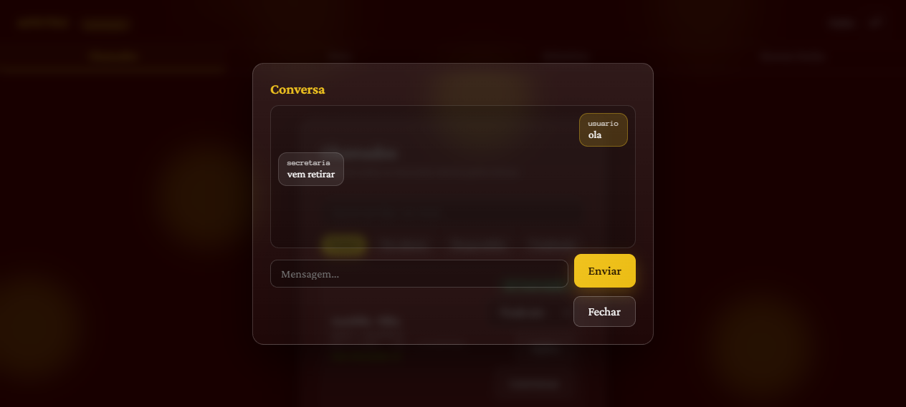
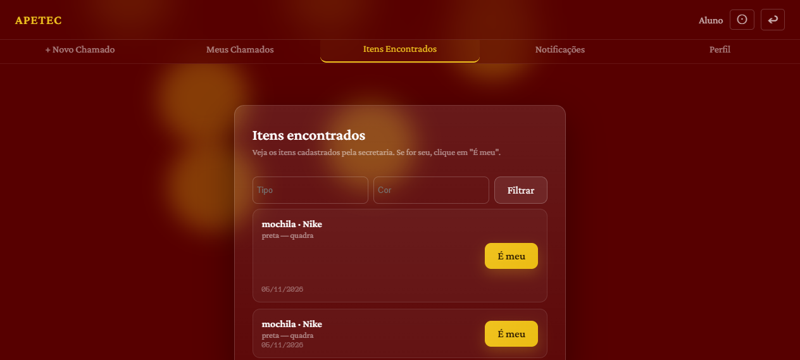
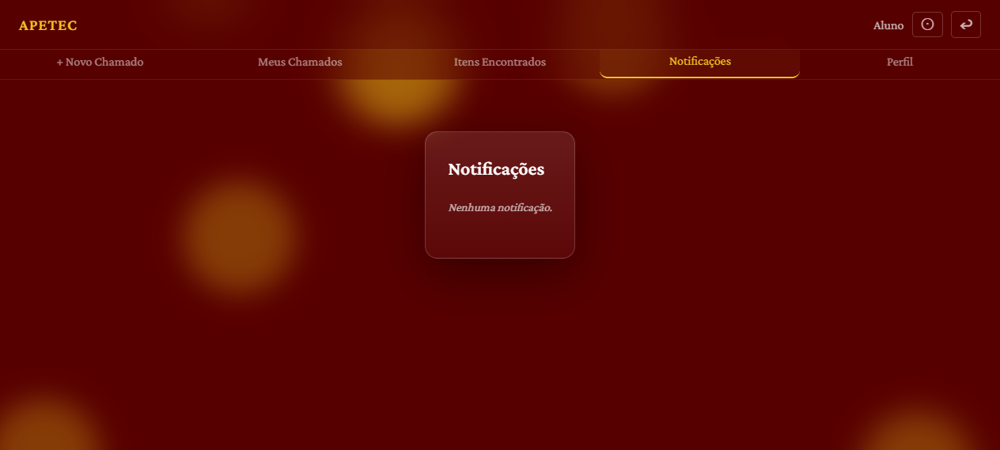
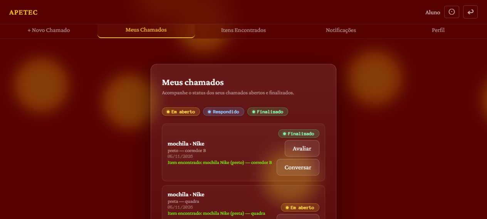
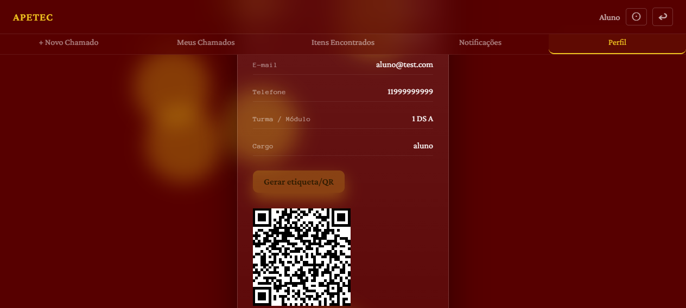
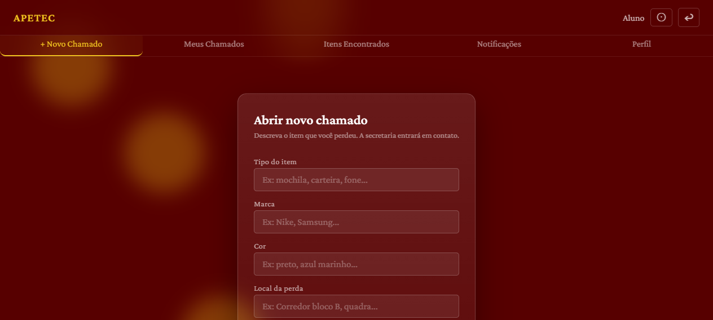

Aqui estão as novidades e melhorias que foram adicionadas ao sistema, com imagens de cada parte.
O sistema agora compara chamados e itens encontrados por tipo, cor, marca, local e data. Quando um item compatível é cadastrado, o aluno recebe um e-mail e uma notificação no sistema.
A secretaria vincula o item ao chamado e gera um código de 6 números. Para retirar, o aluno apresenta esse código. A entrega só é concluída após confirmar a identidade.

Aluno e secretaria podem trocar mensagens dentro do chamado. Há notificação quando uma nova mensagem chega.
Os alunos veem os itens que a secretaria cadastrou e podem dizer "é meu". Isso cria um chamado e avisa a secretaria.

Lista de avisos para o aluno, com opção de marcar como lido.

Mostra números: quantos itens, entregues, doados, taxa de devolução, chamados por status e itens esquecidos há mais de 30 dias. Também permite baixar planilhas (CSV) e marcar itens antigos como doados.

Registra quem fez o quê e quando (cadastro, vínculo, entrega, etc.).
O aluno pode dar nota e comentário sobre o atendimento.

O aluno gera um QR code com seus dados para colar nos objetos, facilitando a identificação se perder.

No cadastro, o CPF é validado e um e-mail de confirmação é enviado.
As janelas de ações, chat e confirmações ficaram com o mesmo estilo do sistema (fundo marrom, detalhes amarelos).

Itens e chamados podem ter fotos (até 5MB).
É possível filtrar por tipo, cor, local e status nas listas.
README reorganizado e pasta de documentação com explicações simples.
Todas as imagens estão na pasta screenshots/.